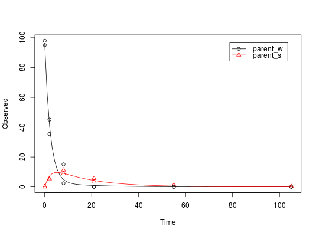

Three experimental datasets from two water sediment systems and one soil
The datasets were used for the comparative validation of several kinetic evaluation software packages (Ranke, 2014).
test_data_from_UBA_2014
Format
A list containing three datasets as an R6 class defined by mkinds.
Each dataset has, among others, the following components
titleThe name of the dataset, e.g.
UBA_2014_WS_riverdataA data frame with the data in the form expected by
mkinfit
Source
Ranke (2014) Prüfung und Validierung von Modellierungssoftware als Alternative zu ModelMaker 4.0, Umweltbundesamt Projektnummer 27452
Examples
# This is a level P-II evaluation of the dataset according to the FOCUS kinetics # guidance. Due to the strong correlation of the parameter estimates, the # covariance matrix is not returned. Note that level P-II evaluations are # generally considered deprecated due to the frequent occurrence of such # large parameter correlations, among other reasons (e.g. the adequacy of the # model). m_ws <- mkinmod(parent_w = mkinsub("SFO", "parent_s"), parent_s = mkinsub("SFO", "parent_w"))#>#> Model cost at call 1 : 2371.755 #> Model cost at call 3 : 2371.755 #> Model cost at call 7 : 457.5705 #> Model cost at call 10 : 457.5608 #> Model cost at call 14 : 297.2882 #> Model cost at call 16 : 297.2882 #> Model cost at call 18 : 297.2881 #> Model cost at call 21 : 275.6034 #> Model cost at call 23 : 275.6034 #> Model cost at call 27 : 268.2102 #> Model cost at call 29 : 268.2101 #> Model cost at call 33 : 255.941 #> Model cost at call 35 : 255.941 #> Model cost at call 39 : 246.486 #> Model cost at call 41 : 246.486 #> Model cost at call 45 : 231.4275 #> Model cost at call 47 : 231.4275 #> Model cost at call 51 : 212.4338 #> Model cost at call 52 : 212.4338 #> Model cost at call 53 : 212.4337 #> Model cost at call 57 : 203.7185 #> Model cost at call 58 : 203.7185 #> Model cost at call 63 : 198.3304 #> Model cost at call 69 : 198.3304 #> Model cost at call 70 : 195.794 #> Model cost at call 72 : 195.7939 #> Model cost at call 76 : 195.2477 #> Model cost at call 77 : 195.2477 #> Model cost at call 82 : 191.6184 #> Model cost at call 84 : 191.6184 #> Model cost at call 88 : 189.9011 #> Model cost at call 90 : 189.9011 #> Model cost at call 91 : 189.9011 #> Model cost at call 94 : 189.223 #> Model cost at call 95 : 189.223 #> Model cost at call 100 : 188.8728 #> Model cost at call 101 : 188.8728 #> Model cost at call 103 : 188.8728 #> Model cost at call 106 : 188.2057 #> Model cost at call 107 : 188.2057 #> Model cost at call 112 : 187.8429 #> Model cost at call 118 : 187.6219 #> Model cost at call 119 : 187.3931 #> Model cost at call 121 : 187.3931 #> Model cost at call 125 : 187.1236 #> Model cost at call 126 : 187.1236 #> Model cost at call 131 : 186.9995 #> Model cost at call 137 : 186.927 #> Model cost at call 139 : 186.927 #> Model cost at call 143 : 186.8909 #> Model cost at call 146 : 186.8909 #> Model cost at call 150 : 186.8708 #> Model cost at call 152 : 186.8708 #> Model cost at call 157 : 186.8606 #> Model cost at call 159 : 186.8606 #> Model cost at call 161 : 186.8606 #> Model cost at call 162 : 186.8606 #> Model cost at call 167 : 186.8551 #> Model cost at call 169 : 186.8551 #> Model cost at call 176 : 186.8519 #> Model cost at call 177 : 186.8519 #> Model cost at call 180 : 186.8519 #> Model cost at call 181 : 186.8519 #> Model cost at call 186 : 186.8504 #> Model cost at call 187 : 186.8504 #> Model cost at call 196 : 186.8496 #> Model cost at call 197 : 186.8496 #> Model cost at call 200 : 186.8496 #> Model cost at call 206 : 186.8493 #> Model cost at call 211 : 186.8493 #> Model cost at call 215 : 186.8493 #> Model cost at call 216 : 186.8491 #> Model cost at call 225 : 186.8491 #> Model cost at call 226 : 186.849 #> Model cost at call 236 : 186.8489 #> Model cost at call 246 : 186.8489 #> Model cost at call 254 : 186.8489 #> Model cost at call 257 : 186.8489 #> Model cost at call 265 : 186.8489 #> Model cost at call 268 : 186.8489 #> Model cost at call 276 : 186.8489 #> Model cost at call 279 : 186.8489 #> Model cost at call 287 : 186.8489 #> Model cost at call 290 : 186.8489 #> Model cost at call 298 : 186.8489 #> Model cost at call 301 : 186.8489 #> Model cost at call 309 : 186.8489 #> Model cost at call 312 : 186.8489 #> Model cost at call 320 : 186.8489 #> Model cost at call 323 : 186.8489 #> Model cost at call 331 : 186.8489 #> Model cost at call 334 : 186.8489 #> Model cost at call 342 : 186.8489 #> Model cost at call 345 : 186.8489 #> Model cost at call 353 : 186.8489 #> Model cost at call 356 : 186.8489 #> Model cost at call 367 : 186.8489 #> Model cost at call 374 : 186.8489 #> Model cost at call 375 : 186.8489 #> Model cost at call 380 : 186.8489 #> Model cost at call 382 : 186.8489 #> Model cost at call 383 : 186.8489 #> Optimisation by method Port successfully terminated.plot(f_river)summary(f_river)$bpar#> Estimate se_notrans t value Pr(>t) Lower #> parent_w_0 9.598567e+01 2.33959810 4.102657e+01 9.568973e-19 NA #> k_parent_w_sink 3.603743e-01 0.03497716 1.030313e+01 4.988281e-09 NA #> k_parent_w_parent_s 6.031370e-02 0.01746026 3.454342e+00 1.514738e-03 NA #> k_parent_s_sink 5.099834e-11 0.10381939 4.912217e-10 5.000000e-01 NA #> k_parent_s_parent_w 7.419672e-02 0.11338174 6.543974e-01 2.608057e-01 NA #> Upper #> parent_w_0 NA #> k_parent_w_sink NA #> k_parent_w_parent_s NA #> k_parent_s_sink NA #> k_parent_s_parent_w NAmkinerrmin(f_river)#> err.min n.optim df #> All data 0.09246946 5 6 #> parent_w 0.06377096 3 3 #> parent_s 0.20882324 2 3# This is the evaluation used for the validation of software packages # in the expertise from 2014 m_soil <- mkinmod(parent = mkinsub("SFO", c("M1", "M2")), M1 = mkinsub("SFO", "M3"), M2 = mkinsub("SFO", "M3"), M3 = mkinsub("SFO"), use_of_ff = "max")#>#> Model cost at call 1 : 340.115 #> Model cost at call 3 : 340.115 #> Model cost at call 12 : 278.5521 #> Model cost at call 14 : 278.5499 #> Model cost at call 22 : 244.4153 #> Model cost at call 24 : 244.4152 #> Model cost at call 32 : 211.0249 #> Model cost at call 34 : 211.0247 #> Model cost at call 42 : 151.2576 #> Model cost at call 44 : 151.2575 #> Model cost at call 46 : 151.2574 #> Model cost at call 52 : 109.7633 #> Model cost at call 53 : 100.8415 #> Model cost at call 58 : 100.8412 #> Model cost at call 61 : 100.8412 #> Model cost at call 62 : 100.8411 #> Model cost at call 64 : 70.07576 #> Model cost at call 66 : 70.07568 #> Model cost at call 76 : 64.29488 #> Model cost at call 78 : 64.29487 #> Model cost at call 86 : 61.39756 #> Model cost at call 88 : 61.39755 #> Model cost at call 96 : 57.47933 #> Model cost at call 98 : 57.47932 #> Model cost at call 106 : 52.46647 #> Model cost at call 108 : 52.46646 #> Model cost at call 116 : 48.17301 #> Model cost at call 118 : 48.173 #> Model cost at call 126 : 45.15666 #> Model cost at call 128 : 45.15665 #> Model cost at call 137 : 44.55574 #> Model cost at call 139 : 44.55573 #> Model cost at call 143 : 44.55573 #> Model cost at call 147 : 43.13847 #> Model cost at call 149 : 43.13847 #> Model cost at call 151 : 43.13847 #> Model cost at call 158 : 43.11922 #> Model cost at call 160 : 43.11922 #> Model cost at call 168 : 42.29535 #> Model cost at call 170 : 42.29535 #> Model cost at call 178 : 42.03979 #> Model cost at call 180 : 42.03979 #> Model cost at call 189 : 41.56286 #> Model cost at call 190 : 41.12187 #> Model cost at call 191 : 39.73019 #> Model cost at call 192 : 39.31762 #> Model cost at call 193 : 39.31762 #> Model cost at call 196 : 39.31762 #> Model cost at call 203 : 38.6346 #> Model cost at call 204 : 38.6346 #> Model cost at call 205 : 38.63459 #> Model cost at call 209 : 38.63459 #> Model cost at call 210 : 38.63459 #> Model cost at call 211 : 38.63459 #> Model cost at call 213 : 38.12767 #> Model cost at call 215 : 38.12767 #> Model cost at call 223 : 38.04349 #> Model cost at call 225 : 38.04349 #> Model cost at call 229 : 38.04349 #> Model cost at call 233 : 37.93963 #> Model cost at call 236 : 37.93963 #> Model cost at call 243 : 37.87645 #> Model cost at call 244 : 37.87645 #> Model cost at call 254 : 37.79144 #> Model cost at call 256 : 37.79144 #> Model cost at call 264 : 37.7493 #> Model cost at call 269 : 37.7493 #> Model cost at call 274 : 37.72466 #> Model cost at call 275 : 37.72466 #> Model cost at call 279 : 37.72466 #> Model cost at call 283 : 37.72466 #> Model cost at call 284 : 37.71402 #> Model cost at call 285 : 37.71402 #> Model cost at call 287 : 37.71402 #> Model cost at call 294 : 37.70366 #> Model cost at call 295 : 37.70366 #> Model cost at call 296 : 37.70366 #> Model cost at call 305 : 37.69553 #> Model cost at call 306 : 37.69553 #> Model cost at call 307 : 37.69553 #> Model cost at call 315 : 37.6936 #> Model cost at call 319 : 37.6936 #> Model cost at call 321 : 37.6936 #> Model cost at call 326 : 37.6924 #> Model cost at call 328 : 37.6924 #> Model cost at call 329 : 37.6924 #> Model cost at call 336 : 37.69198 #> Model cost at call 338 : 37.69198 #> Model cost at call 344 : 37.69198 #> Model cost at call 348 : 37.69197 #> Model cost at call 350 : 37.69197 #> Model cost at call 363 : 37.69197 #> Model cost at call 364 : 37.69197 #> Model cost at call 367 : 37.69197 #> Model cost at call 382 : 37.69197 #> Model cost at call 384 : 37.69197 #> Model cost at call 387 : 37.69197 #> Model cost at call 401 : 37.69197 #> Model cost at call 420 : 37.69197 #> Model cost at call 441 : 37.69197 #> Optimisation by method Port successfully terminated.plot(f_soil)summary(f_soil)$bpar#> Estimate se_notrans t value Pr(>t) Lower #> parent_0 76.55425583 0.943443834 81.1434164 4.422340e-30 74.602593306 #> k_parent 0.12081956 0.004815515 25.0896457 1.639665e-18 0.111257526 #> k_M1 0.84258650 0.930121206 0.9058889 1.871937e-01 0.085876305 #> k_M2 0.04210878 0.013729902 3.0669396 2.729137e-03 0.021450631 #> k_M3 0.01122919 0.008044866 1.3958205 8.804914e-02 0.002550985 #> f_parent_to_M1 0.32240199 0.278620411 1.1571370 1.295466e-01 NA #> f_parent_to_M2 0.16099854 0.030548889 5.2701930 1.196191e-05 NA #> f_M1_to_M3 0.27921500 0.314732717 0.8871496 1.920907e-01 0.015016888 #> f_M2_to_M3 0.55641332 0.650247079 0.8556952 2.004966e-01 0.005360551 #> Upper #> parent_0 78.50591836 #> k_parent 0.13120340 #> k_M1 8.26714671 #> k_M2 0.08266187 #> k_M3 0.04942980 #> f_parent_to_M1 NA #> f_parent_to_M2 NA #> f_M1_to_M3 0.90777217 #> f_M2_to_M3 0.99658634mkinerrmin(f_soil)#> err.min n.optim df #> All data 0.09649963 9 20 #> parent 0.04721283 2 6 #> M1 0.26551209 2 5 #> M2 0.20327575 2 5 #> M3 0.05196549 3 4